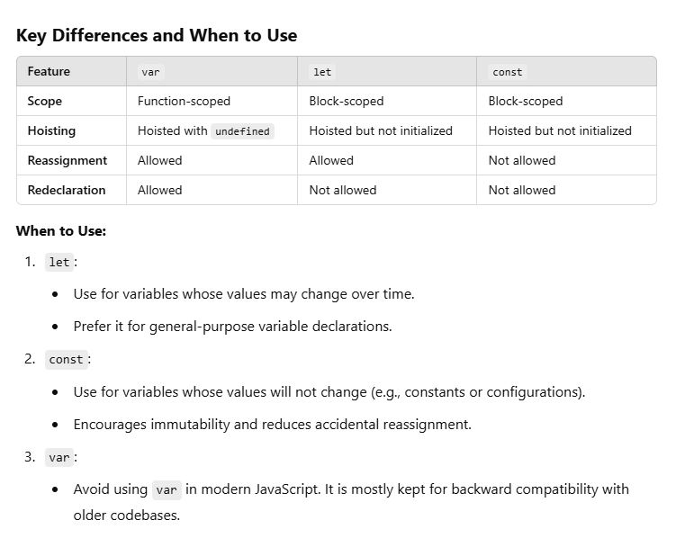
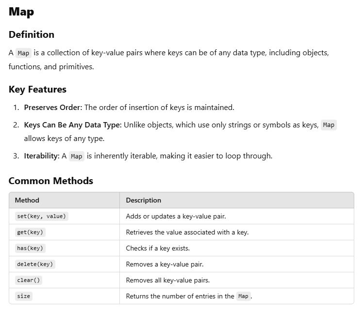

Arrow functions in ES6 (ECMAScript 2015) are a more concise syntax for writing
functions in JavaScript. They are often used for short and simple functions.
Arrow Function Syntax
// Arrow function
const functionName = (param1, param2) => {
// function body
return param1 + param2;
};
// Shorter for single expression
const add = (a, b) => a + b;
Differences Between Arrow Functions and Regular Functions
// Regular function
function add(a, b) {
return a + b;
}
Destructuring assignment is a feature introduced in ES6 that allows you to unpack
values from arrays or properties from objects into distinct variables in a concise
and readable way.
Destructuring Arrays
const [var1, var2] = array;
Example
const fruits = ["apple", "banana", "cherry"];
const [first, second, third] = fruits;
console.log(first); // "apple"
console.log(second); // "banana"
console.log(third); // "cherry"
Nested Objects: Destructuring works with nested objects as well.
const company = { name: "Tech Corp", location: { city: "New York", country: "USA" } };
const { location: { city, country } } = company;
console.log(city); // "New York"
console.log(country); // "USA"
function logObjectProperties(obj) {
for (const [key, value] of Object.entries(obj)) {
console.log(`${key}: ${value}`);
}
}
// Example usage:
const sampleObject = {
name: "Alice",
age: 25,
city: "Paris",
occupation: "Engineer",
};
logObjectProperties(sampleObject);
// Output:
// name: Alice
// age: 25
// city: Paris
// occupation: Engineer
Best Practices
Default to const for declaring variables.
Use let only if you need to reassign a variable.
Avoid var to reduce unexpected bugs caused by hoisting or lack of block scope.

The spread operator in JavaScript, represented by ..., allows you to expand an
iterable (like an array, string, or object) into individual elements or properties.
It was introduced in ES6 and is widely used to write concise, flexible, and readable
code.
Using the Spread Operator with Arrays, Expanding an Array
const numbers = [1, 2, 3];
console.log(...numbers); // 1 2 3
Copying Arrays
const original = [1, 2, 3];
const copy = [...original];
console.log(copy); // [1, 2, 3]
console.log(copy === original); // false (different references)
Combining Arrays
const arr1 = [1, 2, 3];
const arr2 = [4, 5, 6];
const combined = [...arr1, ...arr2];
console.log(combined); // [1, 2, 3, 4, 5, 6]
Adding Elements
const arr = [2, 3, 4];
const extended = [1, ...arr, 5];
console.log(extended); // [1, 2, 3, 4, 5]
const array1 = [1, 2, 3];
const array2 = [4, 5, 6];
const mergedArray = [...array1, ...array2];
console.log(mergedArray);
// Output: [1, 2, 3, 4, 5, 6]
Explanation:
The spread operator (...) expands the elements of an array.
By placing ...array1 and ...array2 inside a new array ([]), you combine the elements of
both arrays into one.
const array3 = [7, 8, 9];
const mergedArray = [...array1, ...array2, ...array3];
console.log(mergedArray);
// Output: [1, 2, 3, 4, 5, 6, 7, 8, 9]
Template literals, introduced in ES6, provide a powerful way to work with strings in
JavaScript. They allow for multi-line strings and easy string interpolation, making
code more readable and concise.
String Interpolation
const name = "Alice";
const age = 25;
const message = `My name is ${name} and I am ${age} years old.`;
console.log(message);
// Output: My name is Alice and I am 25 years old.
Advantages Over Concatenation
const name = "Alice";
const age = 25;
const message = "My name is " + name + " and I am " + age + " years old.";
Summary
Template literals make string interpolation easier by:
Allowing inline embedding of variables and expressions.
Supporting multi-line strings without additional syntax.
Enhancing readability and maintainability of your code.
Default parameters in ES6 allow you to specify default values for function parameters.
If no value or undefined is passed for a parameter, the default value will be used.
This feature improves the flexibility and readability of functions by eliminating the
need for manual checks and default assignments.
Syntax
function greet(name = "Guest") {
return `Hello, ${name}!`;
}
console.log(greet()); // Output: Hello, Guest!
console.log(greet("Alice")); // Output: Hello, Alice!
How It Works
function add(a = 0, b = 0) {
return a + b;
}
console.log(add()); // Output: 0 (uses defaults for both a and b)
console.log(add(5)); // Output: 5 (uses default for b)
console.log(add(5, 10)); // Output: 15 (uses provided values)
Expression Defaults
function calculatePrice(price, tax = price * 0.1) {
return price + tax;
}
console.log(calculatePrice(100)); // Output: 110 (tax is 10% of price)
console.log(calculatePrice(100, 15)); // Output: 115 (overrides default tax)
Map and Set are new collection types introduced in ES6. They provide more powerful and
flexible ways to store and manage data compared to traditional objects and arrays.
Example
const map = new Map();
// Adding key-value pairs
map.set('name', 'Alice');
map.set(42, 'The Answer');
map.set({ key: 'value' }, 'Object as key');
// Accessing values
console.log(map.get('name')); // Output: Alice
console.log(map.has(42)); // Output: true
// Iterating through the map
for (const [key, value] of map) {
console.log(key, value);
}
Example
const set = new Set();
// Adding values
set.add(1);
set.add(2);
set.add(2); // Duplicate, will be ignored
set.add('Alice');
// Checking membership
console.log(set.has(2)); // Output: true
console.log(set.size); // Output: 3
// Iterating through the set
for (const value of set) {
console.log(value);
}

// Creating a dictionary using Map
const dictionary = new Map();
// Adding key-value pairs
dictionary.set('apple', 'A fruit that is red, green, or yellow.');
dictionary.set('book', 'A collection of pages containing written or printed material.');
dictionary.set('computer', 'An electronic device for processing data.');
// Accessing values
console.log(dictionary.get('apple')); // Output: A fruit that is red, green, or yellow.
console.log(dictionary.get('book')); // Output: A collection of pages containing written or printed material.
// Checking if a key exists
console.log(dictionary.has('computer')); // Output: true
console.log(dictionary.has('phone')); // Output: false
// Iterating through the dictionary
console.log('Dictionary entries:');
for (const [word, definition] of dictionary) {
console.log(`${word}: ${definition}`);
}
// Deleting a key-value pair
dictionary.delete('book');
console.log(dictionary.has('book')); // Output: false
// Clearing the dictionary
dictionary.clear();
console.log(dictionary.size); // Output: 0
Key Points
Adding Entries: Use set(key, value) to add new entries.
Accessing Values: Use get(key) to retrieve the value for a specific key.
Checking Existence: Use has(key) to check if a key exists.
Iterating Entries: Use a for...of loop to iterate over the key-value pairs.
Deleting Entries: Use delete(key) to remove a specific entry.
Clearing All Entries: Use clear() to remove all entries.
for...of Example
const array = [10, 20, 30];
for (const value of array) {
console.log(value);
}
// Output:
// 10
// 20
// 30
Example
const string = "Hello";
for (const char of string) {
console.log(char);
}
// Output:
// H
// e
// l
// l
// o
States of a Promise
A Promise has three states:
Pending: The initial state, neither fulfilled nor rejected.
Fulfilled: The operation completed successfully, and the Promise has a resulting value.
Rejected: The operation failed, and the Promise has a reason (error) for the failure.
Creating a Promise
const myPromise = new Promise((resolve, reject) => {
const success = true;
if (success) {
resolve("Operation was successful!");
} else {
reject("Operation failed!");
}
});
Chaining .then()
const fetchData = new Promise((resolve) => {
setTimeout(() => resolve("Data fetched"), 1000);
});
fetchData
.then((data) => {
console.log(data); // Output: Data fetched
return "Processing data";
})
.then((processed) => {
console.log(processed); // Output: Processing data
});
// Create a promise
const delayedMessage = new Promise((resolve) => {
setTimeout(() => {
resolve("This message is logged after 2 seconds!");
}, 2000); // 2-second delay
});
// Use the promise
delayedMessage
.then((message) => {
console.log(message);
})
.catch((error) => {
console.error(error);
});
Explanation:
setTimeout:
Simulates an asynchronous operation that takes 2 seconds.
resolve:
Called when the operation completes successfully, passing the message as the result.
then:
Used to handle the successful resolution of the promise and log the message.
catch:
Included for error handling, though it's not used here since the promise never rejects.
When you run this code, the message "This message is logged after 2 seconds!" will appear in the console after a 2-second delay.
async/await is a feature in JavaScript introduced in ES2017 (ES8) that simplifies
working with asynchronous code. It allows you to write asynchronous code that looks and
behaves more like synchronous code, improving readability and maintainability.
Example
async function example() {
return "Hello, Async!";
}
example().then(console.log); // Output: Hello, Async!
Using async/await with Promises
// Simulating an asynchronous operation
function fetchData() {
return new Promise((resolve, reject) => {
setTimeout(() => {
resolve("Data fetched successfully!");
}, 2000);
});
}
// Using async/await to handle the promise
async function getData() {
console.log("Fetching data...");
const data = await fetchData(); // Wait for the promise to resolve
console.log(data); // Output: Data fetched successfully! (after 2 seconds)
}
getData();
Error Handling with async/await
function fetchDataWithError() {
return new Promise((resolve, reject) => {
setTimeout(() => {
reject("Failed to fetch data!");
}, 2000);
});
}
async function getDataWithErrorHandling() {
try {
console.log("Fetching data...");
const data = await fetchDataWithError();
console.log(data);
} catch (error) {
console.error("Error:", error); // Output: Error: Failed to fetch data!
}
}
getDataWithErrorHandling();
The DOM (Document Object Model) is a programming interface for web documents. It
represents the structure of a web page as a tree of objects, allowing programs (like
JavaScript) to dynamically access and manipulate the content, structure, and styles of
a webpage.
Conclusion
The DOM is a powerful tool for web development, allowing JavaScript to create dynamic,
interactive web pages by manipulating the structure and content of HTML documents in
real time.
Example
script
// Select the button element
const button = document.getElementById("myButton");
// Add an event listener
button.addEventListener("click", function () {
// Change the button text
button.textContent = "You Clicked Me!";
});
script
Key Features of the DOM
1. Tree Structure: The DOM represents an HTML or XML document as a hierarchical tree structure where:
The document itself is the root (document object).
Elements (e.g., , ) are nodes in the tree.
Attributes (e.g., class, id) and text content are child nodes of elements.
2. Standardized: The DOM is standardized by the W3C and WHATWG, ensuring consistent behavior across browsers.
3. Dynamic: The DOM allows real-time updates to a web page without requiring a full reload.
How JavaScript Interacts with the DOM:
Selecting Elements
document.getElementById("id") – Selects an element by its id.
document.querySelector(".class") – Selects the first element matching a CSS selector.
document.querySelectorAll("tag") – Selects all elements matching a CSS selector.
02. Explain how to select elements in the DOM using methods like
`getElementById`, `querySelector`, and `querySelectorAll`
Answer
To manipulate or interact with elements in the DOM using JavaScript, you need to select
them first. Here’s an explanation of three commonly used methods for selecting
elements:
getElementById,
querySelector, and
querySelectorAll.
03. How do event listeners work in JavaScript? Explain `addEventListener`
Answer
Event listeners in JavaScript are a way to respond to user interactions or other events
in a web page.
syntax
target.addEventListener(eventType, callback, options);
04. What is event delegation, and why is it useful?
Answer
Event delegation is a technique in JavaScript where you add a single event listener to a
parent element to handle events triggered by its child elements
Conclusion
Event delegation is a powerful technique in JavaScript for efficiently handling events
on large sets of elements or dynamically created content. It reduces resource usage,
simplifies code, and makes your application more scalable. However, it requires
careful use to handle edge cases like non-bubbling events or deeply nested DOM
structures.
05. What is the difference between `innerHTML`, `textContent`, and `innerText`?
Answer
innerHTML, textContent, and innerText are properties in JavaScript used to manipulate
or retrieve the content of an element. However, they behave differently in terms of
functionality and use cases.
What it does:
Gets or sets the HTML content of an element, including its child elements.
Features:
Reads HTML content: Returns the HTML string representation of the element's content.
Sets HTML content: Allows you to inject HTML, which the browser parses and renders.
2. textContent
What it does:
Gets or sets the plain text content of an element and all its descendants, ignoring any HTML tags.
Features:
Reads plain text: Retrieves only the text inside the element, excluding any HTML markup.
Sets plain text: Escapes any HTML provided, ensuring it is treated as text, not markup.
3. innerText
What it does:
Gets or sets the visible text content of an element, considering CSS styles (e.g., display: none or visibility: hidden).
Features:
Reads visible text: Only retrieves text that is visible to the user.
Sets visible text: Updates the visible text content of an element, similar to textContent.
06. Explain how you can manipulate the CSS styles of an element using JavaScript.
Answer
Conclusion
JavaScript provides several ways to manipulate the CSS styles of an element, allowing
dynamic changes to the appearance of a webpage. These manipulations can be performed
through the style property, class manipulation, or by directly modifying CSS rules.
syntax
element.style.property = value;
Manipulating CSS styles in JavaScript can be done in various ways depending on the use
case. For reusable, scalable solutions, manipulating classes or CSS variables is
preferred. For quick, one-off changes, the style property is effective. Understanding
the context of your project will help you choose the best approach.
Methods:
element.classList.add(className): Adds a class.
element.classList.remove(className): Removes a class.
element.classList.toggle(className): Toggles a class (adds if not present, removes if present).
element.classList.contains(className): Checks if a class exists.
07. How do you traverse the DOM? Explain `parentNode`, `firstChild`, `lastChild`, etc.
Answer
Traversing the DOM means navigating through its hierarchical structure, moving between
elements and nodes in various directions. JavaScript provides several properties and
methods to traverse the DOM tree, allowing you to access parents, children, and
siblings of nodes
1. parentNode
2. childNodes
3. firstChild
4. lastChild
5. nextSibling
6. previousSibling
1. children
2. firstElementChild
3. lastElementChild
4. nextElementSibling
5. previousElementSibling
08. What is the purpose of `preventDefault()` and `stopPropagation()` in event handling?
Answer
preventDefault() and stopPropagation() are two methods in JavaScript used in event
handling. They serve different purposes but are often used together to control how
events behave and interact within the DOM.
Common Use Cases:
Preventing form submission when the user clicks a submit button.
Disabling link navigation when a hyperlink is clicked.
Stopping context menus from appearing on a right-click.
Conclusion
Use preventDefault() to suppress the default behavior of an event (e.g., navigation or form submission).
Use stopPropagation() to stop the event from bubbling up or capturing down the DOM tree.
Together, they offer fine-grained control over event behavior and propagation in the DOM.
BOM (8 Questions)
01. What is the Browser Object Model (BOM) in JavaScript?
Answer
The Browser Object Model (BOM) in JavaScript is a collection of objects provided by the
web browser that allows developers to interact with and manipulate the browser
environment. It gives access to features outside the scope of the Document Object
Model (DOM), such as browser windows, navigation history, and the screen.
Differences Between BOM and DOM
BOM: Deals with the browser environment (windows, navigation, etc.).
DOM: Focuses on the structure and content of a web document.
Use Cases of BOM
Redirecting users to a new URL using location.href.
Accessing browser information using navigator.
Manipulating browser history using history.
Displaying alerts or confirmations using window.alert() or window.confirm().
The BOM provides powerful capabilities for creating interactive and dynamic web applications by working beyond the confines of the document itself.
Key Components of BOM
window.alert(): Display an alert dialog.
window.open(): Open a new browser window.
window.setTimeout(), window.setInterval(): Schedule functions.
Navigator Object
navigator.userAgent: Get the user agent string.
navigator.geolocation: Access geolocation data.
Location Object
location.href: Get or set the current URL.
location.reload(): Reload the current page.
location.pathname: Get the path of the URL.
History Object
history.back(): Navigate to the previous page.
history.forward(): Navigate to the next page.
history.go(n): Navigate to a specific page in the history.
Screen Object
screen.width: Get the width of the screen.
screen.height: Get the height of the screen.
screen.availWidth: Get the available screen width.
02. How does `window` differ from `document`?
Answer
In summary, window provides the overall environment for the browser, while document
focuses specifically on the web page content.
Document Object
Represents the web page (HTML document) loaded in the browser.
It is the root object of the Document Object Model (DOM).
Provides access to and manipulation of the HTML content and structure.
Content Manipulation:
document.body.style.backgroundColor = "lightblue"; // Change the background color
Element Selection:
document.getElementById("myElement"); // Select an element by ID
document.querySelectorAll("p"); // Select all elements
Event Handling:
document.getElementById("btn").addEventListener("click", () => {
console.log("Button clicked!");
});
Structure Representation:
console.log(document.title); // Get the title of the web page
03. Explain how `localStorage`, `sessionStorage`, and `cookies` work and their differences.
Answer
localStorage
Purpose: Used to store data with no expiration time.
Scope: Data persists even after the browser is closed and reopened.
Storage Limit: Typically around 5–10 MB per origin (depending on the browser).
Access: Only accessible from the same origin.
Example Use Case: Saving user preferences or settings for a web application.
Example
// Save data
sessionStorage.setItem("sessionID", "12345");
// Retrieve data
console.log(sessionStorage.getItem("sessionID")); // "12345"
// Remove data
sessionStorage.removeItem("sessionID");
// Clear all data
sessionStorage.clear();
Example
// Create a cookie
document.cookie = "username=JohnDoe; expires=Fri, 31 Dec 2025 23:59:59 GMT; path=/";
// Retrieve cookies
console.log(document.cookie); // "username=JohnDoe"
// Delete a cookie (set expiration in the past)
document.cookie = "username=; expires=Thu, 01 Jan 1970 00:00:00 UTC; path=/";
Storing and Retrieving User Preferences, Store the Theme Preference
function saveThemePreference(theme) {
localStorage.setItem("theme", theme); // Save the theme
console.log(`Theme preference saved: ${theme}`);
}
Retrieve the Theme Preference,
function getThemePreference() {
const theme = localStorage.getItem("theme");
return theme || "light"; // Default to "light" if no theme is stored
}
04. What is the purpose of the `navigator` object, and what properties does it have?
Answer
The navigator object is part of the Browser Object Model (BOM) in JavaScript. It
represents the state and identity of the user's browser and provides information about
the browser environment, including details about the operating system, hardware, and
browser capabilities.
Purpose of the navigator Object
1. Browser Information: Identify the browser name, version, and engine.
2. Operating System Details: Provide information about the user's operating system.
3. Device Features: Detect features like online status, geolocation, battery level, etc.
4. Feature Availability: Check for support for specific features, like service workers or WebRTC.
6. User Agent Access: Retrieve the user agent string, which describes the browser and system.
Retrieve Browser and OS Information
console.log("User Agent:", navigator.userAgent); // Browser and OS details
console.log("Platform:", navigator.platform); // Operating system
Check if Cookies Are Enabled
if (navigator.cookieEnabled) {
console.log("Cookies are enabled.");
} else {
console.log("Cookies are disabled.");
}
Detect Online/Offline Status
console.log("Online:", navigator.onLine); // Check online status
window.addEventListener("online", () => console.log("You are online!"));
window.addEventListener("offline", () => console.log("You are offline!"));
Use Cases
1. Feature Detection: Determine if certain APIs or features are supported in the user's browser.
2. User Experience: Customize behavior based on the user's platform, language, or device capabilities.
3. Connectivity: Handle offline scenarios gracefully with navigator.onLine and serviceWorker.
4. Geolocation-Based Features: Provide location-specific content or services.
5. Performance Optimization: Use navigator.hardwareConcurrency and navigator.connection for adapting application behavior.
05. How do `window.open` and `window.close` methods work in JavaScript?
Answer
_blank: Opens a new tab or window (default).
_self: Opens in the same window/tab as the current one.
_parent: Opens in the parent frame.
_top: Opens in the full body of the window.
06. Explain how to get the viewport width and height of a browser window using JavaScript
Answer
meta name="viewport" content="width=device-width, initial-scale=1.0">
Additional Notes
Mobile Devices:
On mobile devices, the viewport may shrink or expand when the virtual keyboard appears.
This will trigger a resize event, and the dimensions will reflect the visible viewport.
Zoom Effects:
If the user zooms in or out, the viewport dimensions reported by window.innerWidth and
window.innerHeight may change accordingly.
These methods allow you to dynamically interact with the browser's viewport size for
responsive web design and layout adjustments.
Function Implementation
function logWindowSize() {
window.addEventListener("resize", () => {
const width = window.innerWidth;
const height = window.innerHeight;
console.log(`Window resized to Width: ${width}px, Height: ${height}px`);
});
}
// Call the function to start logging
logWindowSize();
07. What is the purpose of the `setTimeout` and `setInterval` functions?
Answer
Creating a digital clock
setInterval(() => {
const now = new Date();
console.log(now.toLocaleTimeString());
}, 1000);
Notes and Best Practices
function preciseInterval(callback, delay) {
setTimeout(() => {
callback();
preciseInterval(callback, delay);
}, delay);
}
08. How can you detect if a user is online or offline using the BOM?
Answer
See the clock.html file
Web API & JSON (10 Questions)
01. What is the Fetch API, and how does it work with Promises?
Answer
The Fetch API is a modern, powerful, and flexible way to make network requests in web
applications. It allows you to request resources (such as files, APIs, or data)
asynchronously from servers. It is built on Promises, making it easier to work with
asynchronous operations compared to older approaches like XMLHttpRequest
How It Works
Initiating a Fetch Request
Handling the Response
Promises
Example: POST Request with Fetch
fetch('https://api.example.com/submit', {
method: 'POST',
headers: {
'Content-Type': 'application/json',
},
body: JSON.stringify({ name: 'John', age: 30 }),
})
.then(response => {
if (!response.ok) {
throw new Error(`HTTP error! Status: ${response.status}`);
}
return response.json();
})
.then(data => {
console.log('Response:', data);
})
.catch(error => {
console.error('Fetch error:', error);
});
Comparison to XMLHttpRequest
Simpler Syntax: The Fetch API is cleaner and easier to use.
Promise-based: Built on Promises, making it easier to handle async operations.
Streaming: Allows reading of responses progressively (useful for large files).
Better Abstractions: Supports request and response objects for more flexible configurations.
The Fetch API is widely supported in modern browsers, though you may need polyfills for older versions.
02. How does `XMLHttpRequest` differ from the Fetch API?
Answer
XMLHttpRequest (XHR) and the Fetch API are both used to make HTTP requests, but they
differ significantly in terms of design, ease of use, and capabilities.
Syntax and Ease of Use, XMLHttpRequest
const xhr = new XMLHttpRequest();
xhr.open('GET', 'https://api.example.com/data');
xhr.onreadystatechange = function () {
if (xhr.readyState === 4) {
if (xhr.status === 200) {
console.log(JSON.parse(xhr.responseText));
} else {
console.error(`Error: ${xhr.status}`);
}
}
};
xhr.send();
03. Explain what JSON is and how it’s used in JavaScript
Answer
JSON (JavaScript Object Notation) is a lightweight data format used for storing and
exchanging data. It is easy for humans to read and write and straightforward for
machines to parse and generate. JSON is widely used in modern web applications to send
data between a client and a server.
Advantages of JSON
Easy to Read and Write:
JSON syntax is simple and human-readable.
Efficient Data Exchange:
Compact and lightweight format for transferring data over networks.
Widely Supported:
JSON is supported in most programming languages and web APIs.
Versatile:
Suitable for various use cases, from configuration files to database storage and API responses.
Conclusion
JSON is a key data format in web development, enabling seamless communication between
clients and servers. In JavaScript, it is easy to work with using built-in methods
like JSON.stringify() and JSON.parse(). Its simplicity and flexibility make it an
essential tool for modern applications.
JSON Syntax
{
"name": "Alice",
"age": 25,
"isStudent": true,
"skills": ["JavaScript", "Python", "HTML"],
"address": {
"city": "New York",
"zip": "10001"
}
}
Key Characteristics of JSON
Text-Based:
JSON is a plain-text format, making it easy to transfer over a network.
Language-Independent:
While derived from JavaScript, JSON is language-agnostic and can be used in most programming languages, such as Python, Java, or Ruby.
Structure:
Data is organized in key-value pairs, arrays, or nested structures.
Uses {} for objects and [] for arrays.
Data Types: JSON supports the following data types:
Strings: "Hello"
Numbers: 123, 45.67
Booleans: true, false
Null: null
Objects: { "key": "value" }
Arrays: [1, 2, 3]
04. How do you parse JSON data in JavaScript, and how do you stringify JavaScript objects?
Answer
In JavaScript, you can parse JSON data to convert it into a JavaScript object and
stringify JavaScript objects to convert them into JSON strings using the built-in JSON
object.
Combined Example
// JSON string
const jsonString = '{"name":"Alice","age":25,"isStudent":true}';
// Parse JSON string to JavaScript object
const obj = JSON.parse(jsonString);
console.log(obj); // Output: { name: 'Alice', age: 25, isStudent: true }
// Modify the object
obj.age = 26;
// Stringify the JavaScript object back to a JSON string
const updatedJsonString = JSON.stringify(obj, null, 2);
console.log(updatedJsonString);
/*
Output:
{
"name": "Alice",
"age": 26,
"isStudent": true
}
*/
Summary
JSON.parse(jsonString): Converts a JSON string into a JavaScript object.
JSON.stringify(obj): Converts a JavaScript object into a JSON string.
Use error handling (try...catch) with JSON.parse() to avoid issues with malformed JSON.
Customize stringification with a replacer function or an array of keys for precise control.
05. What is CORS, and why do we need it when making API requests?
Answer
CORS (Cross-Origin Resource Sharing) is a security feature implemented in web browsers
that controls how resources (e.g., APIs, images, stylesheets) on one domain can be
accessed by web pages from another domain.
By default, web browsers implement the Same-Origin Policy to protect users. This policy
restricts web pages from making requests to a different origin (protocol, domain, or
port) than the one from which the page was served.
Response Headers (set by the server):
Access-Control-Allow-Origin: Specifies which origin(s) can access the resource.
Example: Access-Control-Allow-Origin: https://example.com
To allow all origins, use *.
Access-Control-Allow-Methods: Lists HTTP methods (e.g., GET, POST) that are permitted.
Example: Access-Control-Allow-Methods: GET, POST
Access-Control-Allow-Headers: Specifies which custom headers can be sent in the request.
Example: Access-Control-Allow-Headers: Content-Type, Authorization
Access-Control-Allow-Credentials: Indicates whether cookies or other credentials can be sent with the request.
Example: Access-Control-Allow-Credentials: true
Example: CORS in Action
GET /data HTTP/1.1
Host: api.example.org
Origin: https://example.com
Conclusion
CORS is essential for secure cross-origin communication, enabling APIs to control which
clients can access their resources. Proper configuration of CORS headers ensures
secure and seamless interaction between web applications and APIs.
06. Explain how the `FormData` API works and when you’d use it.
Answer
The FormData API is a built-in JavaScript object that allows you to easily construct a
set of key-value pairs representing form fields and their values. It is commonly used
for sending form data, including file uploads, to a server via an HTTP request,
typically using the fetch() API or XMLHttpRequest.
Sending FormData with Fetch
const formElement = document.querySelector('form');
const formData = new FormData(formElement);
fetch('https://example.com/submit', {
method: 'POST',
body: formData, // Automatically sets Content-Type to multipart/form-data
})
.then(response => response.json())
.then(data => console.log('Success:', data))
.catch(error => console.error('Error:', error));
JavaScript
document.querySelector('#uploadForm').addEventListener('submit', async (event) => {
event.preventDefault(); // Prevent form from submitting traditionally
const formElement = event.target;
const formData = new FormData(formElement);
try {
const response = await fetch('https://example.com/upload', {
method: 'POST',
body: formData,
});
const result = await response.json();
console.log('Success:', result);
} catch (error) {
console.error('Error:', error);
}
});
07. What is the purpose of the `History` API, and how do `pushState` and `replaceState` work?
Answer
The History API is a browser feature that allows developers to manipulate the browser
session history. It enables dynamic updates to the URL displayed in the browser
without reloading the page, which is especially useful for single-page applications
(SPAs). The API also allows developers to navigate through the history stack
programmatically.
Example
window.addEventListener('popstate', (event) => {
console.log('Location changed:', location.pathname);
console.log('State:', event.state);
});
// Simulate navigation
history.pushState({ page: 'home' }, 'Home Page', '/home');
history.pushState({ page: 'about' }, 'About Page', '/about');
// Go back
history.back(); // Triggers popstate event
08. How can you handle errors in API requests with `try/catch` blocks and the `.catch()` method?
Answer
In JavaScript, handling errors in API requests is essential to provide a better user
experience and manage unexpected failures.
Handling Errors Using .catch() with Promises
function fetchData() {
fetch('https://jsonplaceholder.typicode.com/posts')
.then(response => {
// Check if the response status is not ok (e.g., 404 or 500)
if (!response.ok) {
return Promise.reject('Network response was not ok');
}
return response.json();
})
.then(data => {
console.log('Data fetched successfully:', data);
})
.catch(error => {
// Handle any errors that occur during the fetch or Promise chain
console.error('There was an error fetching data:', error);
});
}
fetchData();
09. What are web sockets, and how do they differ from HTTP requests?10. Explain the basics of the Service Worker API and its use in creating progressive web apps (PWAs).
Answer
WebSockets are a protocol that allows for full-duplex, persistent communication between
a client (usually a web browser) and a server. Unlike traditional HTTP requests, which
are request-response based, WebSockets allow for continuous two-way communication
where both the server and client can send messages to each other at any time.
Example
const socket = new WebSocket('ws://example.com/socket');
Key Features of Service Workers
Background Sync: Service workers can synchronize data with the server while the app is offline or in the background.
Offline Support: By caching resources (such as HTML, CSS, and JavaScript files), service workers enable PWAs to work offline.
Push Notifications: Service workers allow apps to receive push notifications even when the user isn't actively browsing.
Interception of Network Requests: Service workers can intercept network requests and
provide custom responses, enabling features like caching strategies, background data sync, and offline-first behavior.
Creating a PWA with Service Workers
To create a PWA using service workers, you generally need to follow these steps:
Make your site HTTPS: Service workers require HTTPS (except for localhost during
development).
Register the Service Worker: Add the JavaScript file that contains the service worker
code to your app.
Cache Static Assets: During the installation phase, cache important resources such as
HTML, CSS, and JavaScript files.
Handle Fetch Events: Intercept network requests to serve cached content or request
resources from the network if the cache is stale.
Enable Background Sync (Optional): Implement background synchronization for data
updates when the app is offline.
Benefits of PWAs
Offline Functionality: Users can interact with the app even without an internet
connection.
Faster Load Times: Caching assets makes the app load faster, especially on repeat
visits.
Push Notifications: Stay connected with users even when they are not using the app.
App-like Experience: PWAs provide a native app-like experience on the web (e.g.,
full-screen, home screen installation).
Summary
WebSockets: Allow persistent, bidirectional communication between client and server,
ideal for real-time applications such as chat and live updates.
HTTP Requests: Traditional request-response model used for loading web pages or
fetching data from a server.
Service Workers: A key technology for Progressive Web Apps, allowing background tasks
like caching, offline support, and background synchronization. Service workers help
create a native-app-like experience by handling network requests and enabling offline
capabilities.